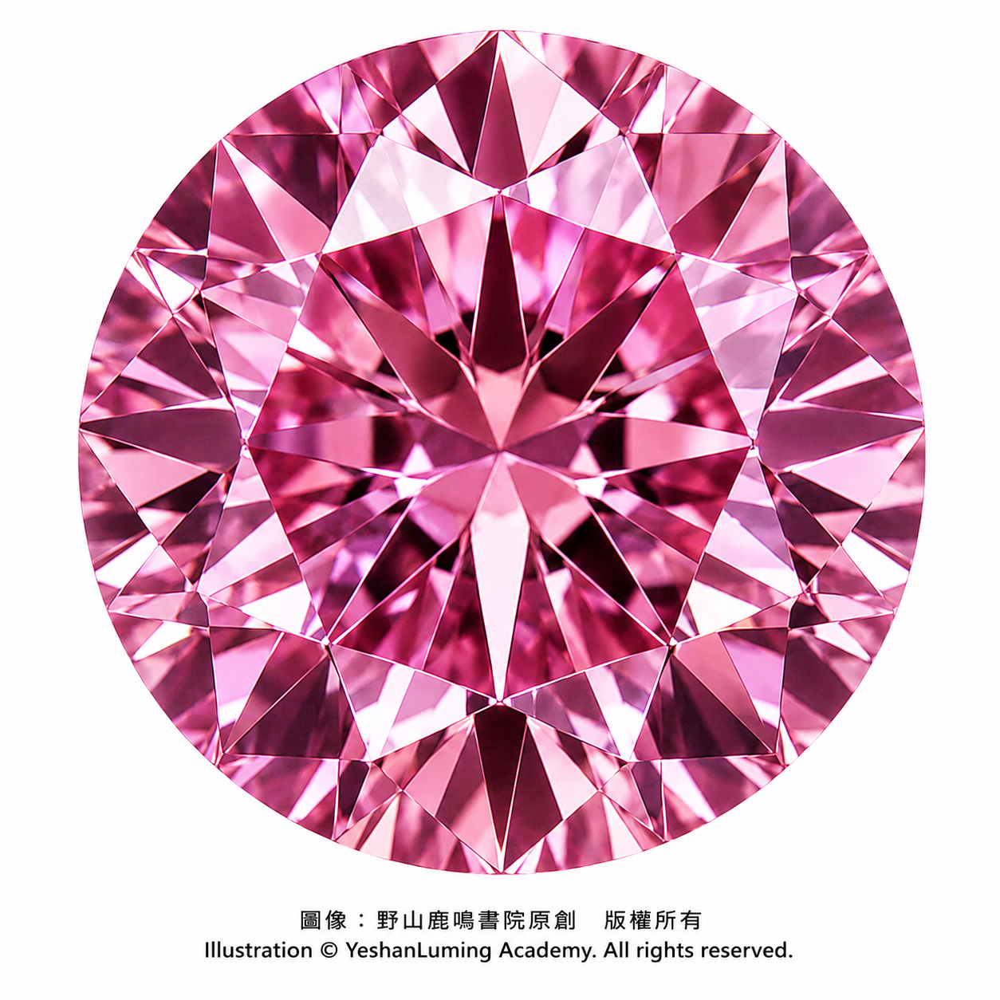
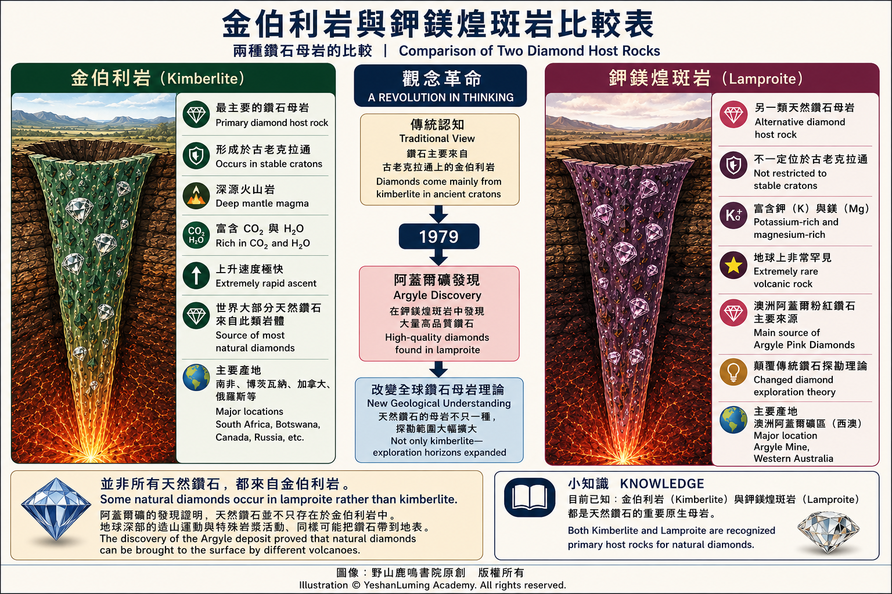

阿蓋爾礦粉紅鑽石橫空出世·顛覆鑽石母岩的認知革命The Argyle Pink Diamonds That Changed the World
A Revolution in Understanding Diamond Host Rocks
The World of Gemstones · Diamond SeriesThe Argyle Pink Diamonds That Changed the World
A Revolution in Understanding Diamond Host Rocks
The World of Gemstones · Diamond Series阿蓋爾礦粉紅鑽石橫空出世·顛覆鑽石母岩的認知革命
寶石世界·鑽石篇
寶石世界·鑽石篇（110）The World of Gemstones · Diamond Series (110)
在上一篇中，我們介紹了金伯利岩，那條把鑽石從地幔深處運送到地表的「高速列車」。
長期以來，全球地質學界、寶石學界及鑽石探勘界普遍認為：古老克拉通上的金伯利岩（Kimberlite），是天然鑽石最主要、也是最可靠的原生母岩。
「克拉通」（Craton）是一個地質學名詞。這個詞源自希臘語 Kratos，意思是「力量」或「強壯」。
在地質學上，克拉通是指大陸地殼中長期保持相對穩定、已經存在數億乃至數十億年的古老核心區域。與周圍較為活躍的地質構造帶相比，克拉通通常較少經歷強烈的造山運動與大規模地殼變形。
關於克拉通的形成與地質意義，需要時我們還會詳細介紹。在這裡，您只需了解它的大概含義即可。
長期以來，人們普遍把古老克拉通與金伯利岩，視為尋找原生鑽石礦床最重要的兩個條件。
然而，這項延續多年的傳統認知，在1979年澳洲阿蓋爾（Argyle）礦區被發現後，被徹底改寫。
原因是，阿蓋爾礦出產的天然鑽石，並不是儲存在金伯利岩中，而是儲存在另一種被稱為鉀鎂煌斑岩（Lamproite）的岩石中。
在上一篇中，我們介紹了金伯利岩——那條把鑽石從地幔深處運送到地表的「高速列車」。
長期以來，全球地質學界、寶石學界及鑽石探勘界普遍認為：古老克拉通上的金伯利岩（Kimberlite），是天然鑽石最主要、也是最可靠的原生母岩。
「克拉通」（Craton）是一個地質學名詞。這個詞源自希臘語 Kratos，意思是「力量」或「強壯」。
在地質學上，克拉通是指大陸地殼中長期保持相對穩定、已經存在數億乃至數十億年的古老核心區域。與周圍較為活躍的地質構造帶相比，克拉通通常較少經歷強烈的造山運動與大規模地殼變形。
關於克拉通的形成與地質意義，需要時我們還會詳細介紹。在這裡，您只需了解它的大概含義即可。
長期以來，人們普遍把古老克拉通與金伯利岩，視為尋找原生鑽石礦床最重要的兩個條件。
然而，這項延續多年的傳統認知，在1979年澳洲阿蓋爾（Argyle）礦區被發現後，被徹底改寫。
原因是，阿蓋爾礦出產的天然鑽石，並不是儲存在金伯利岩中，而是儲存在另一種被稱為鉀鎂煌斑岩（Lamproite）的岩石中。
這是一種富含鉀與鎂的特殊火山岩，與傳統金伯利岩在化學成分、形成環境及地質分布上，都存在明顯差異。
為了理解這場觀念革命，我們可以透過下面的表格，對金伯利岩與鉀鎂煌斑岩這兩類重要鑽石母岩的地質差異，進行簡單比較。

Click to enlarge
阿蓋爾礦的發現證明，天然鑽石並不只存在於古老克拉通上的金伯利岩中。
某些位於古老陸塊邊緣、曾經經歷過強烈構造變化活動的地區，同樣可能透過深源岩漿，把地幔中的鑽石運送到地表。
這項發現，不但極大拓寬了全球鑽石探勘的地理範圍，也讓地質學家重新思考：還有哪些不同的地質環境，同樣可能孕育或保存天然鑽石礦床？
阿蓋爾礦位於澳洲西北部東金伯利地區的古老構造帶中。早期文獻常將這一地區稱為金山褶皺帶（King Leopold Mobile Belt），現代地質學中則多與霍爾斯克里克造山帶（Halls Creek Orogen）聯繫起來。
阿蓋爾礦最著名的特色，是出產極為罕見的天然粉紅鑽石，甚至少量天然紅色鑽石。這些獨特而迷人的色彩，與當地漫長而劇烈的地質演化歷史密切相關。
地質學研究認為，大約十八億年前，金伯利地塊與北澳古老陸塊附近的構造單元，曾經歷過強烈的板塊碰撞與造山運動。
與形成於相對穩定地幔環境中的傳統鑽石不同，阿蓋爾地區的鑽石在形成或長期保存於地幔的過程中，曾受到強烈地質構造運動作用的影響。
這些地質運動產生了巨大的定向剪切應力（Shear Stress）。在地幔高溫、高壓環境中，鑽石雖然不會像普通物質那樣熔化，卻可能在長期而強烈的壓力作用下，產生極其細微的塑性變形。
這場深藏於地球內部的板塊構造運動，為後來阿蓋爾粉紅鑽石的誕生，埋下了最重要的物理基礎。
在此後漫長的數億年間，這些已經受到板塊構造運動巨大壓力、產生不同程度塑性變形的鑽石，繼續保存於地幔深處。
直到約十一億八千萬年前，一次迅速而猛烈的鉀鎂煌斑岩岩漿噴發，才把這批鑽石快速帶到地表。
在一般寶石學認知中，許多彩色鑽石的顏色，都與晶體中所含的微量元素有關。
藍色鑽石通常與晶格中含有微量硼（Boron）有關。
黃色鑽石通常與晶格中含有微量氮（Nitrogen）有關。
然而，阿蓋爾礦粉紅鑽石與紅色鑽石的致色機制，卻與上述情況完全不同。它們的粉紅色與紅色，並不是由某種能直接產生粉紅色的外來元素造成，而主要與鑽石晶格受到巨大地質壓力後產生的塑性變形（Plastic Deformation）有關。
需要特別說明的是，阿蓋爾鑽石的科學類型並不完全相同。許多阿蓋爾粉鑽屬於 Type Ia，部分具有 Type IaB 或混合型特徵，也有少量屬於 Type IIa。
這裡所說的鑽石科學類型分類（Diamond Type Classification），是科學界與寶石學界根據鑽石晶格中氮、硼等微量元素是否存在，以及它們的含量與排列方式所建立的一套分類方法。它與一般消費者熟悉的 4C（Color、Clarity、Cut、Carat）標準完全不同。
本篇不再深入介紹這部分內容。您只需記住一點即可：阿蓋爾粉紅鑽石的粉紅色，主要不是由這些微量元素直接造成，而是來自晶格本身受到巨大壓力後產生的塑性變形。
阿蓋爾粉紅鑽與紅鑽的顏色，主要來自晶格塑性變形。
那麼來自晶格本身受到巨大壓力後，鑽石產生的塑性變形， 導致鑽石出現了哪些變化？ 下面詳細列一下， 這部分稍微專業一些，不過不用擔心，即使不能完全理解，也不會影響閱讀。
原子滑移與錯位（Glide Planes）
在巨大構造應力作用下，鑽石原本規則的碳原子三維結構，可能沿著某些晶體方向發生極其細微的滑移與錯位。
粉紅色變形紋（Pink Graining）
這種原子級別的滑移，會在鑽石內部形成平行或交錯分布的變形區域。在顯微鏡下，有時可以觀察到被稱為 Pink Graining 的粉紅色變形紋。
約550奈米吸收帶（550 nm Absorption Band）
當白光通過這些發生塑性變形的區域時，晶格缺陷會使鑽石對接近綠光波段的可見光產生選擇性吸收。當部分綠光被吸收後，剩餘光線便可能呈現粉紅、紫紅，甚至極為罕見的天然紅色。晶格塑性變形程度越大，顏色通常也越濃郁。
這就是阿蓋爾礦粉紅與紅色鑽石的形成原因。
簡單地說，阿蓋爾粉紅鑽石的顏色，不是來自外來物質的污染，也不是普通內含物直接造成，而主要來自晶格本身受到巨大地質壓力後留下的結構變化。
理解這一點，便足夠理解阿蓋爾礦粉紅鑽石最大的秘密。
這不是一場普通的化學反應，而是一場光線在經歷過巨大地質創傷的鑽石晶格中通過時，上演的一場幾何光學交響樂。
也許正因如此，阿蓋爾粉紅鑽石才如此迷人。
它的粉紅色，不是來自外來元素，而是來自十八億年前那場改變地球深部構造的板塊碰撞。
每一顆阿蓋爾粉紅鑽石，都保存著一段凝固在晶體中的地球歷史。
（未完待續）
In the previous article, we introduced kimberlite—the geological "high-speed train" that carries diamonds from deep within the Earth's mantle to the surface.
For many decades, geologists, gemologists, and diamond exploration specialists around the world shared a common belief: kimberlite occurring within ancient cratons was the primary—and most reliable—host rock of natural diamonds.
The term "craton" is a geological concept. It originates from the Greek word Kratos, meaning "strength" or "power."
In geology, a craton refers to the ancient, stable core of a continent that has remained relatively unchanged for hundreds of millions—or even billions—of years. Compared with the surrounding tectonically active belts, cratons have experienced far fewer major mountain-building events and large-scale crustal deformation.
We will discuss the formation and geological significance of cratons in greater detail later. For now, it is sufficient simply to understand the basic concept.
For a long time, geologists regarded ancient cratons together with kimberlite as the two most important indicators when searching for primary diamond deposits.
However, this long-standing concept was fundamentally overturned after the discovery of Australia's Argyle Mine in 1979.
The reason was astonishing.
The diamonds from Argyle were not hosted in kimberlite, but in an entirely different volcanic rock known as lamproite.
In the previous article, we introduced kimberlite—the geological "high-speed train" that carries diamonds from deep within the Earth's mantle to the surface.
For many decades, geologists, gemologists, and diamond exploration specialists around the world shared a common belief: kimberlite occurring within ancient cratons was the primary—and most reliable—host rock of natural diamonds.
The term "craton" is a geological concept. It originates from the Greek word Kratos, meaning "strength" or "power."
In geology, a craton refers to the ancient, stable core of a continent that has remained relatively unchanged for hundreds of millions—or even billions—of years. Compared with the surrounding tectonically active belts, cratons have experienced far fewer major mountain-building events and large-scale crustal deformation.
We will discuss the formation and geological significance of cratons in greater detail later. For now, it is sufficient simply to understand the basic concept.
For a long time, geologists regarded ancient cratons together with kimberlite as the two most important indicators when searching for primary diamond deposits.
However, this long-standing concept was fundamentally overturned after the discovery of Australia's Argyle Mine in 1979.
The reason was astonishing.
The diamonds from Argyle were not hosted in kimberlite, but in an entirely different volcanic rock known as lamproite.
Lamproite is a rare potassium- and magnesium-rich volcanic rock whose chemical composition, geological setting, and distribution differ significantly from those of kimberlite.
Click to enlarge
The discovery of Argyle proved that natural diamonds are not confined to kimberlite within ancient cratons.
Certain regions located along the margins of ancient continental blocks, where intense tectonic activity once occurred, can also transport diamonds from the mantle to the Earth's surface through deep-source magmatism.
This discovery dramatically expanded the geographical scope of diamond exploration and prompted geologists to ask an important new question:
What other geological environments might also preserve or transport natural diamond deposits?
The Argyle Mine lies within an ancient structural belt in the East Kimberley region of northwestern Australia.
Earlier geological literature often referred to this area as the King Leopold Mobile Belt, whereas modern geology generally associates it with the Halls Creek Orogen.
Argyle became world-famous for producing extraordinarily rare natural pink diamonds, together with a very small number of natural red diamonds.
These remarkable colors are closely connected to the region's long and dramatic geological history.
Geological studies suggest that approximately 1.8 billion years ago, the Kimberley Block collided with neighboring crustal blocks of northern Australia during a major mountain-building event.
Unlike traditional diamonds that formed within relatively stable mantle environments, the diamonds beneath Argyle experienced powerful tectonic forces while forming—or while being stored deep within the mantle over geological time.
These tectonic movements generated enormous shear stress.
Although diamonds do not melt under mantle conditions like ordinary materials, prolonged exposure to such tremendous directional stress can produce extremely subtle plastic deformation within their crystal lattices.
This deep-Earth tectonic event laid the most important physical foundation for the birth of the Argyle pink diamonds.
For hundreds of millions of years afterward, these diamonds remained preserved within the mantle while retaining varying degrees of lattice deformation caused by tectonic stress.
Then, approximately 1.18 billion years ago, a rapid and violent lamproite eruption finally carried these extraordinary diamonds to the Earth's surface.
In gemology, the colors of many fancy-color diamonds are produced by trace elements incorporated into the crystal lattice.
Blue diamonds are generally associated with trace amounts of boron.
Yellow diamonds usually owe their color to trace amounts of nitrogen.
The coloring mechanism of the Argyle pink and red diamonds, however, is fundamentally different.
Their colors are not produced by any trace element capable of creating pink coloration.
Instead, they result primarily from plastic deformation within the diamond crystal lattice caused by enormous geological pressure.
It is also important to note that the scientific classifications of Argyle diamonds are not identical.
Many Argyle pink diamonds belong to Type Ia, some exhibit Type IaB or mixed characteristics, and a small number are classified as Type IIa.
The Diamond Type Classification is a scientific system established by gemologists and mineral scientists based on the presence, concentration, and arrangement of trace elements such as nitrogen and boron within the crystal lattice.
It is entirely different from the familiar 4Cs—Color, Clarity, Cut, and Carat Weight—used by consumers.
We will not explore this classification system in detail here.
For the purposes of this article, it is enough to remember one key point:
The pink color of Argyle diamonds is produced primarily by plastic deformation of the crystal lattice—not directly by trace elements.
The colors of Argyle pink and red diamonds originate mainly from this lattice deformation.
The following concepts are somewhat technical, but there is no need to worry—even without understanding every detail, you will still grasp the central idea.
Glide Planes
Under tremendous tectonic stress, the orderly three-dimensional arrangement of carbon atoms within the diamond may undergo extremely subtle slipping and displacement along specific crystallographic directions.
Pink Graining
These atomic-scale movements create parallel or intersecting deformation zones inside the crystal.
Under a microscope, these structures sometimes appear as the characteristic Pink Graining observed in many Argyle diamonds.
The 550 nm Absorption Band
When white light passes through these deformed regions, defects within the crystal lattice selectively absorb light near the green portion of the visible spectrum.
As green wavelengths are partially absorbed, the remaining reflected light may appear pink, purplish pink, or—in extremely rare cases—natural red.
Generally speaking, the greater the degree of lattice deformation, the richer and more intense the color becomes.
This is the fundamental reason why Argyle produced its extraordinary pink and red diamonds.
Simply put, the colors of Argyle pink diamonds are not the result of foreign impurities or ordinary inclusions.
Instead, they originate from structural changes permanently recorded within the crystal lattice after immense geological pressure reshaped it deep inside the Earth.
Understanding this principle is enough to understand the greatest secret behind the Argyle pink diamonds.
This is not merely a chemical process.
It is a magnificent symphony of geometric optics performed as light passes through a crystal lattice that still bears the scars of ancient tectonic violence.
Perhaps this is precisely why Argyle pink diamonds are so captivating.
Their color does not come from foreign elements.
It comes from a continental collision that reshaped the deep Earth 1.8 billion years ago.
Every Argyle pink diamond preserves within its crystal a frozen chapter of our planet's geological history.
(To be continued)